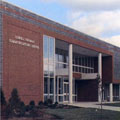

|  |
Lowell Thomas Communcations Center
Built in 1865
Office of the current College President |
Construction for the Lowell Thomas Communication Center began in 1984 with generous gifts from generous donors. Robert R. Dyson, member of the college's board of trustees, became the project's first major donor with a gift of $250,000. The McCann Foundation donated a million dollars and Lowell Thomas Jr. made two individual gifts totaling $550,000. After three years of construction the building finally opened in 1987.
The Lowell Thomas Communications Center provided accommodations for the academic schools of Communications and Computer Science & Mathematics. (The School of Computer Science & Mathematics would eventually move to its new home in Hancock in 2011). The building featured two television studios, film processing areas, two radio broadcast rooms, classrooms, and the Charles and Cornelia Murray Journalism Room, which contained anything a student would need to write, edit and present printed news. The first floor contained a display room which highlighted Lowell Thomas's exciting career as a famed newscaster, author, and world traveler.
Renovations in 2012 have eclipsed the basement and first floor, giving way to a newly designed Digital Toolbox lab, sports communication center, and internship office. Admissions and the Global Studies Department have also found a new home in Lowell Thomas. The newly-renovated basement houses the WMAR radio studio, the MCTV office, classrooms, a lounge area, and a screening room, complete with state-of-the-art equipment.
Renovations to the second floor, which include updating the television equipment and studios, are scheduled to take place in the near future.